Publications
Where a publisher’s policy allows it, I share a version of the paper here, and each entry says which version it is and under what terms. Otherwise the link goes to the publisher’s page. For entries marked “to be verified”, no file is offered yet.
Books · Articles · Chapters · Edited volumes and special issues · Under review
Books
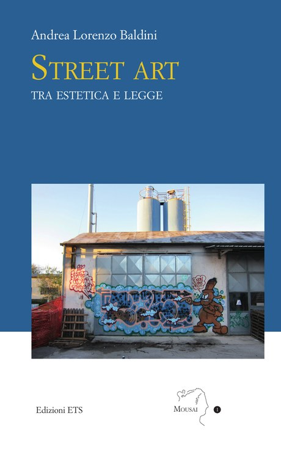
Baldini, Andrea (2021). Street Art tra Estetica e Legge. Pisa: ETS. ISBN: 8846758803.
No copy hosted here. For a reading copy, please contact me. Request a copy
Back cover
Qual è la relazione tra la street art e la legge? La tesi di questo scritto è che la street art ha una relazione costitutiva con la legge. Un aspetto cruciale dell’identità di questo genere d’arte urbana dipende dalla sua capacità di rovesciare gli usi dominanti degli spazi pubblici. Gli artisti di street art sovvertono quelle leggi e norme sociali che regolano la città. La street art non solo ha trasformato gli spazi pubblici e le loro funzioni in materiale artistico, ma ha anche fatto diventare la propria attitudine ribelle nei confronti della legge una risorsa creativa. Questo saggio vuole chiarire e argomentare quest’idea, traendo allo stesso momento importanti conseguenze per quanto riguarda la metafisica della street art, il suo valore e la sua relazione con la proprietà intellettuale, in particolare col diritto d’autore e i diritti morali. All’estremo opposto rispetto all’arte contrattuale, la street art è arte fuorilegge.
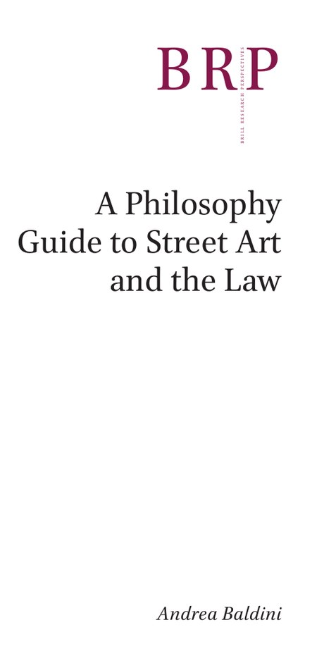
Baldini, Andrea (2018). A Philosophy Guide to Street Art and the Law. Leiden: Brill. ISBN: 978-90-04-39404-9.
No copy hosted here. For a reading copy, please contact me. Request a copy
Back cover
What is the relationship between street art and the law? In A Philosophy Guide to Street Art and the Law, Andrea Baldini argues that street art has a constitutive relationship with the law. A crucial aspect of the identity of this urban art kind depends on its capacity to turn up-side down dominant uses of public spaces. Street artists subvert those laws and social norms that regulate the city. Baldini shows that street art has not only transformed public spaces and their functions into artistic material, but has also turned its rebellious attitude toward the law into a creative resource. He aims at elucidating and arguing for this claim, while drawing important implications at the level of street art’s metaphysics, value, and relationship with rights of intellectual property, in particular copyright and moral rights. At the other end of the spectrum of contractual art, street art is outlaw art.
Baldini, Andrea and Pietro Rivasi (2017). Un(Authorized)//Commissioned. Rome: WholeTrain Press. ISBN: 9788897640059.
Shared by the authors. Text only (images omitted). The book is out of print and the publisher has closed. Download PDF
Back cover
Can paintings made illegally in public space, commonly regarded as acts of vandalism, be recognised by a public institution and enter a contemporary art collection without being decontextualised? Can writers and street artists who wish to engage with galleries use the documentation of what they made in urban space without permission, rather than undertaking a course of study and working on classical supports such as canvas and paper? Through the essays of Pietro Rivasi and Andrea Baldini, as well as images by Zelle Asphaltkultur, Fra32 and Egs, among others, Unauthorized // Commissioned investigates the complex relationship between urban art and institutions, taking as examples the experiences of “Icone” and “1984. Evoluzione e rigenerazione del writing”.
Articles
Forthcoming
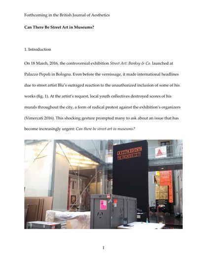
Baldini, Andrea (forthcoming). “Can There Be Street Art in Museums?” The British Journal of Aesthetics.
Accepted manuscript. Pre-copyedited, author-produced version of an article accepted for publication in The British Journal of Aesthetics (Oxford University Press) following peer review. [Link to the published version by DOI: to be added when available.] Download PDF
Abstract
This paper explores whether authentic street art can exist in institutional settings such as galleries or museums, defending a position of moderate optimism. While both radical and moderate pessimists claim that institutionalisation inevitably erodes street art's rebellious, site-specific, and ephemeral nature, I argue that institutional public exhibitions can preserve the practice's constitutive features under certain conditions. Addressing three major challenges—the artist's intention, subversiveness, and site-specificity—I show how curators might respond with ethically grounded, subculturally aware, and context-sensitive approaches. Drawing on philosophical, sociological, and curatorial literature, I sketch a topology of institutional exhibitions, encompassing survey shows such as the controversial Street Art: Banksy & Co., as well as Banksy versus Bristol Museum and Seth’s Range Ta Chambre, which genuinely attempt, perhaps with varying degrees of success, to integrate street art within the museum context. After examining Blu’s Muto and Rivasi's exhibition 1984, I also contend that new-media exhibitions, which focus on photographic and video documentation, are especially good candidates for the authentic display of street art. I suggest that this format takes advantage of long-standing appreciative conventions, similar to those found in other challenging contemporary genres such as performance art and land art, where reproductions often function as perfect surrogates for the original piece.
2026
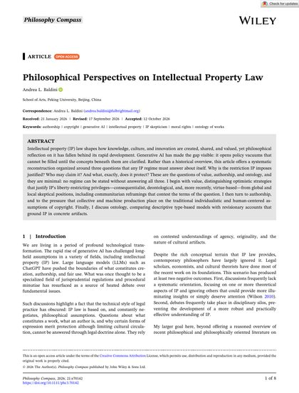
Baldini, Andrea (2026). “Philosophical Perspectives on Intellectual Property Law,” Philosophy Compass 21(5), e70142. doi:10.1111/phc3.70142.
Open access, published version. CC BY licence. © 2026 The Author(s). Philosophy Compass, John Wiley & Sons Ltd. Download PDF
Abstract
Intellectual property (IP) law shapes how knowledge, culture, and innovation are created, shared, and valued, yet philosophical reflection on it has fallen behind its rapid development. Generative AI has made the gap visible: it opens policy vacuums that cannot be filled until the concepts beneath them are clarified. Rather than a historical overview, this article offers a systematic reconstruction organized around three questions that any IP regime must answer about itself. Why is the restriction IP imposes justified? Who may claim it? And what, exactly, does it protect? These are the questions of value, authorship, and ontology, and they are minimal: no regime can be stated without answering all three. I begin with value, distinguishing optimistic strategies that justify IP's liberty‐restricting privileges—consequentialist, deontological, and, more recently, virtue‐based—from global and local skeptical positions, including communitarian reframings that contest the terms of the question. I then turn to authorship, and to the pressure that collective and machine production place on the traditional individualistic and human‐centered as sumptions of copyright. Finally, I discuss ontology, comparing descriptive type‐based models with revisionary accounts that ground IP in concrete artifacts.
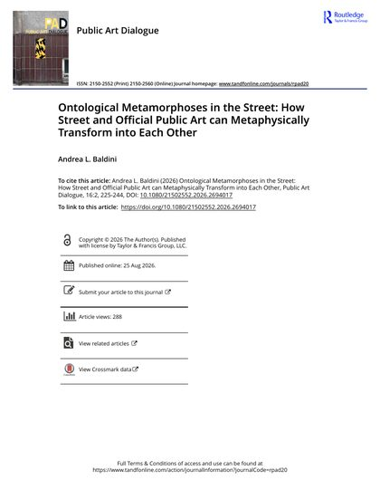
Baldini, Andrea (2026). “Ontological Metamorphoses in the Street: How Street and Official Public Art Can Metaphysically Transform into Each Other.” Public Art Dialogue 16(2), pp. 225–244. doi:10.1080/21502552.2026.2694017
Open access, published version. CC BY-NC-ND 4.0 licence. © 2026 The Author(s). Public Art Dialogue, Taylor & Francis. Download PDF
Abstract
Beginning with the recognition that street art and official public art are genuinely distinct, opposing art kinds—the former constitutively driven by social subversion and the latter by programmatic civic integration—this article challenges a widely held, implicit premise among public art theorists: that an artwork’s categorization within this taxonomy is permanently fixed at the time of production. By examining the trajectories of prominent public artworks, including the heritagization of Banksy’s Migrant Child and the popular recoding of Visbal’s Fearless Girl, I argue that shifts in public attitudes and tracking practices toward a work cannot be dismissed as mere interpretative variance. Instead, they represent genuine ontological metamorphoses. Drawing on Ásta’s conferralist framework of social ontology, I show that street art and official public art are conferred social categories whose assignment is contingent on the context-bound tracking practices of evaluating publics. Finally, rather than treating public friction as an administrative nuisance, I investigate the emancipatory potential of this ontology in the context of cultural policy and urban governance. I introduce the concept of ontological superposition to theorize structural deadlocks in which an artwork is concurrently sustained in conflicting categories by competing publics. Consequently, this model deprives top-down institutional mandates of their perceived “natural” authority and returns aesthetic determination—in a Rancièrian sense—to the city’s inhabitants.
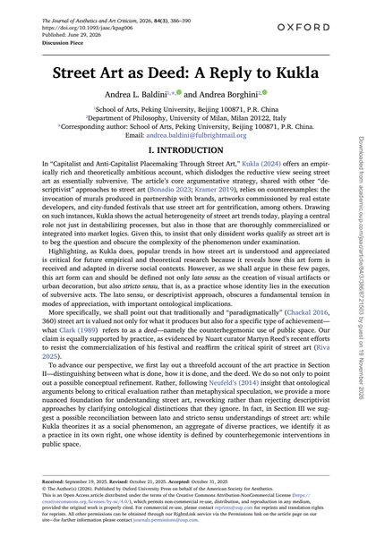
Baldini, Andrea and Andrea Borghini (2026). “Street Art as Deed: A Reply to Kukla.” The Journal of Aesthetics and Art Criticism 84(3), pp. 386–390. doi:10.1093/jaac/kpag006.
Open access, published version. CC BY-NC 4.0 licence. © The Author(s) 2026. Published by Oxford University Press on behalf of the American Society for Aesthetics. Download PDF
Abstract
Quill Kukla's “Capitalist and Anti-Capitalist Placemaking Through Street Art” presents a descriptivist view of street art as a heterogeneous phenomenon that plays both resistant and commercial roles in urban life. While empirically illuminating, this approach sidesteps the subcultural dimension that has historically defined the practice, overlooking a fundamental tension in modes of appreciation. We argue that street art has traditionally been valued not only for its visual outcomes, but also for a specific achievement—what Clark refers to as a deed—namely, the counterhegemonic use of public space. Following Neufeld’s insight that ontological arguments belong to critical evaluation rather than metaphysical speculation, we create a three-part framework that distinguishes between what is done, its doing, and the deed. This account explains why Kukla’s reduction of street art to “what is done” collapses ontologically distinct modes of appreciation, risking erasing the practice's normative core. By way of a conclusion, we suggest a conciliation. Kukla’s perspective sees street art lato sensu as a phenomenon resulting from bundled practices, whereas we defend street art stricto sensu as a practice defined by its subversive deeds. These perspectives reveal complementary but ontologically distinct aspects of what happens on the city’s walls.
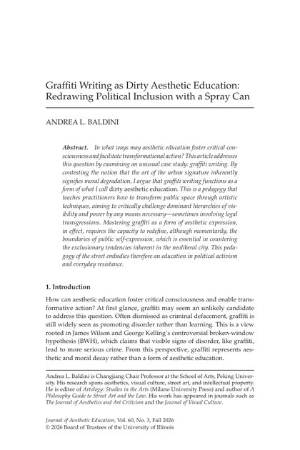
Baldini, Andrea (2026). “Graffiti Writing as Dirty Aesthetic Education: Redrawing Political Inclusion with a Spray Can.” The Journal of Aesthetic Education 60(3), pp. 30–52.
Open access, published version. CC BY 4.0 licence. Published by University of Illinois Press (via Project MUSE). Download PDF
Abstract
In what ways may aesthetic education foster critical consciousness and facilitate transformational action? This article addresses this question by examining an unusual case study: graffiti writing. By contesting the notion that the art of the urban signature inherently signifies moral degradation, I argue that graffiti writing functions as a form of what I call dirty aesthetic education. This is a pedagogy that teaches practitioners how to transform public space through artistic techniques, aiming to critically challenge dominant hierarchies of visibility and power by any means necessary—sometimes involving legal transgressions. Mastering graffiti as a form of aesthetic expression, in effect, requires the capacity to redefine, although momentarily, the boundaries of public self-expression, which is essential in countering the exclusionary tendencies inherent in the neoliberal city. This pedagogy of the street embodies therefore an education in political activism and everyday resistance.
2025
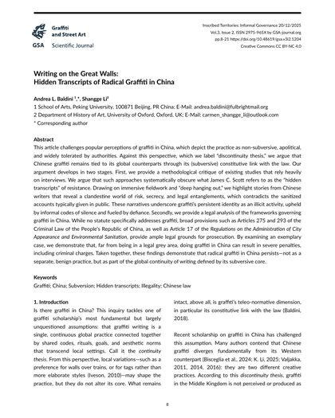
Baldini, Andrea and Shangge Li (2025). “Writing on the Great Walls: Hidden Transcripts of Radical Graffiti in China.” Graffiti & Street Art 3(2), pp. 8–21. doi:10.48619/gsa.v3i2.1204.
Open access, published version. CC BY-NC 4.0 licence, as stated in the published PDF. Graffiti & Street Art, vol. 3, issue 2. Download PDF
Abstract
This article challenges popular perceptions of graffiti in China, which depict the practice as non-subversive, apolitical, and widely tolerated by authorities. Against this perspective, which we label “discontinuity thesis,” we argue that Chinese graffiti remains tied to its global counterparts through its (subversive) constitutive link with the law. Our argument develops in two stages. First, we provide a methodological critique of existing studies that rely heavily on interviews. We argue that such approaches systematically obscure what James C. Scott refers to as the “hidden transcripts” of resistance. Drawing on immersive fieldwork and “deep hanging out,” we highlight stories from Chinese writers that reveal a clandestine world of risk, secrecy, and legal entanglements, which contradicts the sanitized accounts typically given in public. These narratives underscore graffiti’s persistent identity as an illicit activity, upheld by informal codes of silence and fueled by defiance. Secondly, we provide a legal analysis of the frameworks governing graffiti in China. While no statute specifically addresses graffiti, broad provisions such as Articles 275 and 293 of the Criminal Law of the People’s Republic of China, as well as Article 17 of the Regulations on the Administration of City Appearance and Environmental Sanitation, provide ample legal grounds for prosecution. By examining an exemplary case, we demonstrate that, far from being in a legal grey area, doing graffiti in China can result in severe penalties, including criminal charges. Taken together, these findings demonstrate that radical graffiti in China persists—not as a separate, benign practice, but as part of the global continuity of writing defined by its subversive core.
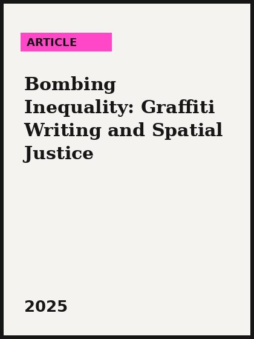
Baldini, Andrea (2025). “Bombing Inequality: Graffiti Writing and Spatial Justice.” Theoretical Studies in Literature and Art 45(4), pp. 165–178.
No copy hosted here. Full text on the publisher’s website. Download a copy
Abstract
This study contests the prevalent perception of graffiti writing, especially tagging and bombing, as meaningless vandalism. It contends that graffiti is a form of expression with intrinsic political implications. Leveraging the notion of spatial justice and Jacques Rancière’s philosophy, I demonstrate how graffiti reclaims urban visibility against the commercial monopoly of visibility in public spaces and challenges the inequitable allocation of opportunities for self-expression in modern cities. Despite writers’ common denial of political motives, their actions may be interpreted as manifestations of resistance within wider socio-spatial conflicts. This study situates graffiti within discussions of political art, spatial commodification, and everyday resistance, proposing a normative framework for viewing the art of the urban signature as an activity that redefines “the community that speaks.”
2024
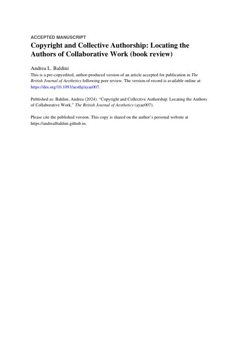
Baldini, Andrea (2024). “Copyright and Collective Authorship: Locating the Authors of Collaborative Work.” The British Journal of Aesthetics (ayae007). doi:10.1093/aesthj/ayae007.
Accepted manuscript. Pre-copyedited, author-produced version of a book review accepted for publication in The British Journal of Aesthetics (Oxford University Press) following peer review. Published version: https://doi.org/10.1093/aesthj/ayae007. Download PDF
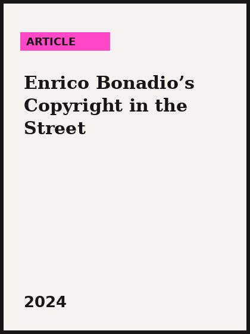
Baldini, Andrea (2024). “Enrico Bonadio’s Copyright in the Street.” Queen Mary Journal of Intellectual Property 14(1), pp. 101–105.
No copy hosted here. Full text on the publisher’s website. Download a copy
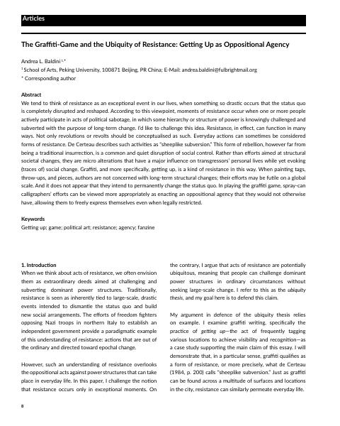
Baldini, Andrea (2024). “The Graffiti-Game and the Ubiquity of Resistance: Getting Up as Oppositional Agency.” Graffiti & Street Art 2(1), pp. 8–17. doi:10.48619/gsa.v2i1.1014.
Open access, published version. CC BY 4.0 licence, as stated on the journal’s website. Graffiti & Street Art, vol. 2, issue 1. Download PDF
Abstract
We tend to think of resistance as an exceptional event in our lives, when something so drastic occurs that the status quo is completely disrupted and reshaped. According to this viewpoint, moments of resistance occur when one or more people actively participate in acts of political sabotage, in which some hierarchy or structure of power is knowingly challenged and subverted with the purpose of long-term change. I’d like to challenge this idea. Resistance, in effect, can function in many ways. Not only revolutions or revolts should be conceptualised as such. Everyday actions can sometimes be considered forms of resistance. De Certeau describes such activities as “sheeplike subversion.” This form of rebellion, however far from being a traditional insurrection, is a common and quiet disruption of social control. Rather than efforts aimed at structural societal changes, they are micro alterations that have a major influence on transgressors’ personal lives while yet evoking (traces of) social change. Graffiti, and more specifically, getting up, is a kind of resistance in this way. When painting tags, throw-ups, and pieces, authors are not concerned with long-term structural changes; their efforts may be futile on a global scale. And it does not appear that they intend to permanently change the status quo. In playing the graffiti game, spray-can calligraphers’ efforts can be viewed more appropriately as enacting an oppositional agency that they would not otherwise have, allowing them to freely express themselves even when legally restricted.
2023
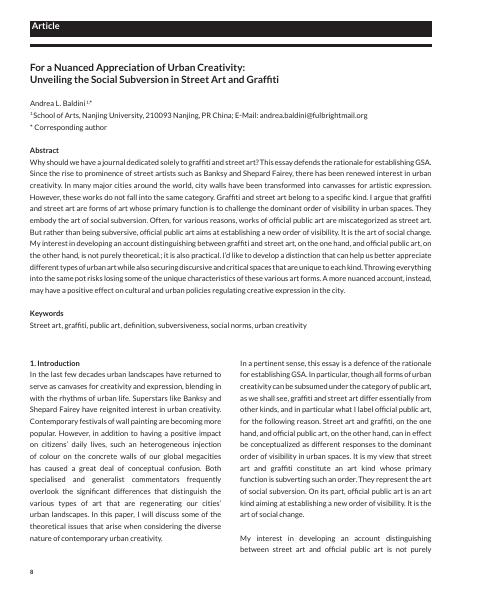
Baldini, Andrea (2023). “For a Nuanced Appreciation of Urban Creativity: Unveiling the Social Subversion in Street Art and Graffiti.” Graffiti & Street Art 1(2), pp. 8–19.
Open access, published version. CC BY 4.0 licence, as stated on the journal’s website. Graffiti & Street Art, vol. 1, issue 2. Download PDF
Abstract
Why should we have a journal dedicated solely to graffiti and street art? This essay defends the rationale for establishing GSA. Since the rise to prominence of street artists such as Banksy and Shepard Fairey, there has been renewed interest in urban creativity. In many major cities around the world, city walls have been transformed into canvasses for artistic expression. However, these works do not fall into the same category. Graffiti and street art belong to a specific kind. I argue that graffiti and street art are forms of art whose primary function is to challenge the dominant order of visibility in urban spaces. They embody the art of social subversion. Often, for various reasons, works of official public art are miscategorized as street art. But rather than being subversive, official public art aims at establishing a new order of visibility. It is the art of social change. My interest in developing an account distinguishing between graffiti and street art, on the one hand, and official public art, on the other hand, is not purely theoretical; it is also practical. I’d like to develop a distinction that can help us better appreciate different types of urban art while also securing discursive and critical spaces that are unique to each kind. Throwing everything into the same pot risks losing some of the unique characteristics of these various art forms. A more nuanced account, instead, may have a positive effect on cultural and urban policies regulating creative expression in the city.
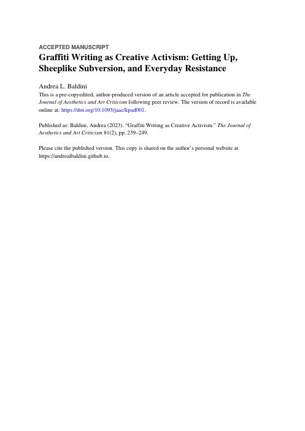
Baldini, Andrea (2023). “Graffiti Writing as Creative Activism: Getting Up, Sheeplike Subversion, and Everyday Resistance.” The Journal of Aesthetics and Art Criticism 81(2), pp. 239–249. doi:10.1093/jaac/kpad001.
Accepted manuscript. Pre-copyedited, author-produced version of an article accepted for publication in The Journal of Aesthetics and Art Criticism (Oxford University Press) following peer review. Published version: https://doi.org/10.1093/jaac/kpad001. Download PDF
Abstract
Is graffiti writing creative activism? In this paper, I challenge commonly held beliefs that graffiti writing is politically inert. On the contrary, I argue that graffiti writing is an example of creative activism. Rather than being a narcissistic form of vandalism, primarily directed at increasing one’s fame in front of an esoteric group, that is, fellow writers, writing is a form of everyday resistance allowing its practitioners to challenge authoritarian power. In questioning dominant hierarchies, graffiti is a powerful tool to help correct a specific instance of spatial injustice: the unequal distribution of access to urban surfaces for self-expression in the city, where corporations and political elites hold an unjustified monopoly over visual communication.
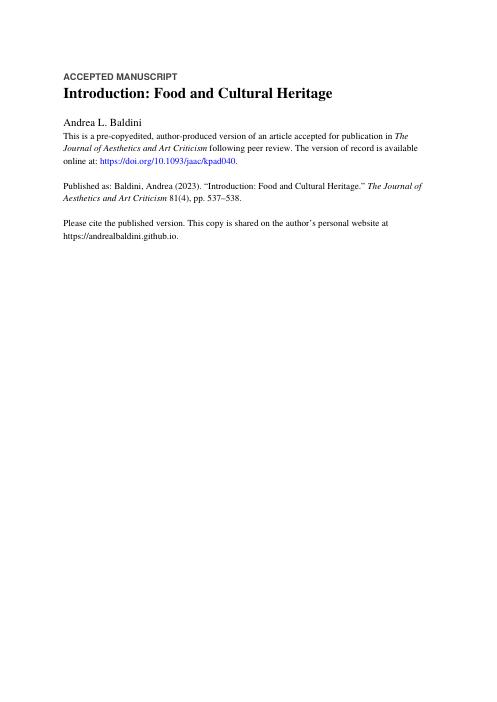
Baldini, Andrea (2023). “Introduction: Food and Cultural Heritage.” The Journal of Aesthetics and Art Criticism 81(4), pp. 537–538. doi:10.1093/jaac/kpad040.
Accepted manuscript. Pre-copyedited, author-produced version of an article accepted for publication in The Journal of Aesthetics and Art Criticism (Oxford University Press) following peer review. Published version: https://doi.org/10.1093/jaac/kpad040. Download PDF
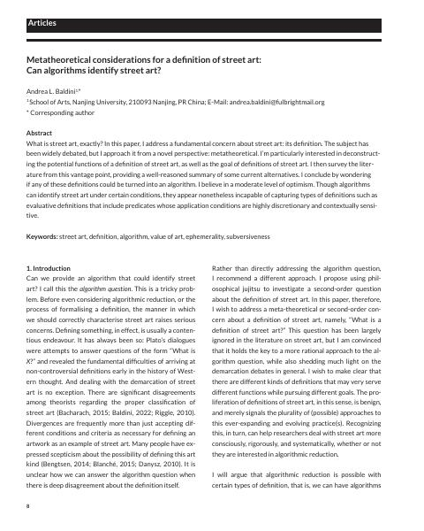
Baldini, Andrea (2023). “Metatheoretical Considerations for a Definition of Street Art: Can Algorithms Identify Street Art?” Street Art & Urban Creativity 9(2), pp. 8–14. doi:10.25765/sauc.v9i2.791.
Open access, published version. CC BY-NC 4.0 licence, as stated on the journal’s page. Street Art & Urban Creativity, vol. 9, issue 2. Download PDF
Abstract
What is street art, exactly? In this paper, I address a fundamental concern about street art: its definition. The subject has been widely debated, but I approach it from a novel perspective: metatheoretical. I’m particularly interested in deconstructing the potential functions of a definition of street art, as well as the goal of definitions of street art. I then survey the literature from this vantage point, providing a well-reasoned summary of some current alternatives. I conclude by wondering if any of these definitions could be turned into an algorithm. I believe in a moderate level of optimism. Though algorithms can identify street art under certain conditions, they appear nonetheless incapable of capturing types of definitions such as evaluative definitions that include predicates whose application conditions are highly discretionary and contextually sensitive.
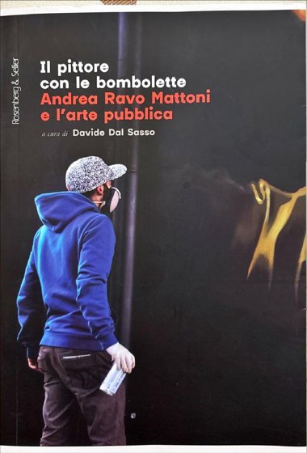
Baldini, Andrea (2023). “Street Art vs Arte Pubblica Ufficiale [Street Art vs Official Public Art].” La Rivista di Estetica. I Quaderni. Le Arti Contemporanee 1, pp. 39–59.
Shared by the author. Author’s copy, in the layout of the publisher’s proofs. © Rosenberg & Sellier. Download PDF
Abstract
This paper argues that Andrea Ravo Mattoni’s Classicism Project is official public art rather than street art. By developing a taxonomy of public art, I characterize official public art as the art of social change, whereas street art is better conceptualized as the art of social subversion. Ravo Mattoni’s Classicism Project is official public art insofar as it does not aim at merely transgressing social norms regulating uses and functions of public spaces. Its goal is rather establishing a new order of visibility.
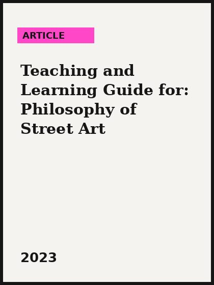
Baldini, Andrea (2023). “Teaching and Learning Guide for: Philosophy of Street Art.” Philosophy Compass 18(3), e12907. doi:10.1111/phc3.12907
No copy hosted here. For a reading copy, please contact me. Request a copy
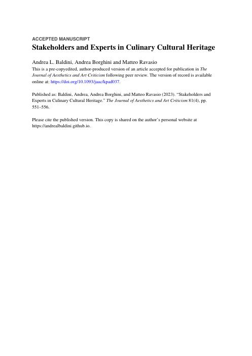
Baldini, Andrea, Andrea Borghini, and Matteo Ravasio (2023). “Stakeholders and Experts in Culinary Cultural Heritage.” The Journal of Aesthetics and Art Criticism 81(4), pp. 551–556. doi:10.1093/jaac/kpad037.
Accepted manuscript. Pre-copyedited, author-produced version of an article accepted for publication in The Journal of Aesthetics and Art Criticism (Oxford University Press) following peer review. Published version: https://doi.org/10.1093/jaac/kpad037. Download PDF
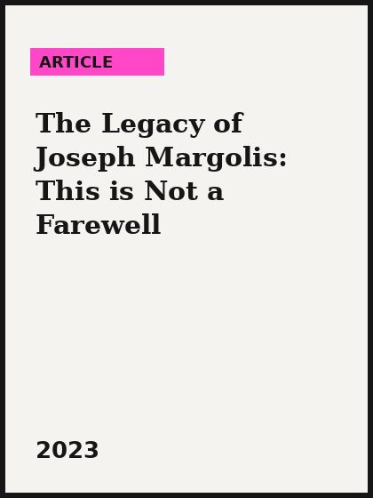
Baldini, Andrea, Feng Peng, et al. (2023). “The Legacy of Joseph Margolis: This is Not a Farewell.” EAJP 2(2), pp. 1–4.
No copy hosted here. For a reading copy, please contact me. Request a copy
2022
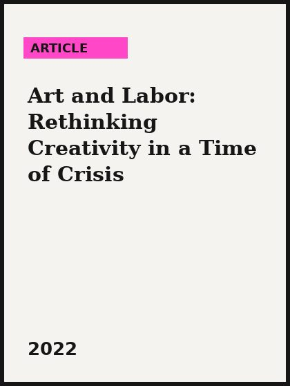
Baldini, Andrea (2022). “Art and Labor: Rethinking Creativity in a Time of Crisis.” La Rivista di Estetica 79, pp. 33–48.
No copy hosted here. For a reading copy, please contact me. Request a copy
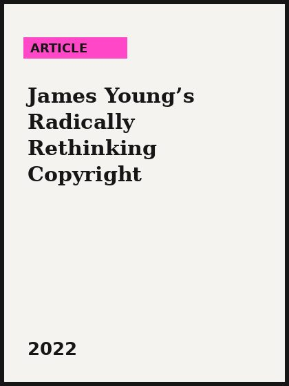
Baldini, Andrea (2022). “James Young’s Radically Rethinking Copyright.” Estetika: The European Journal of Aesthetics 59(1), pp. 75–79.
No copy hosted here. For a reading copy, please contact me. Request a copy
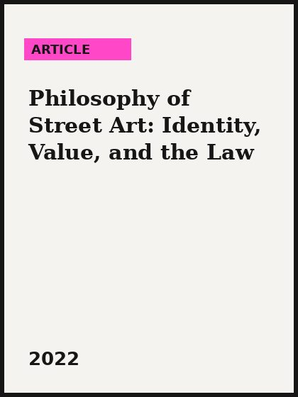
Baldini, Andrea (2022). “Philosophy of Street Art: Identity, Value, and the Law.” Philosophy Compass 17(9), e12862. doi:10.1111/phc3.12862.
No copy hosted here. For a reading copy, please contact me. Request a copy
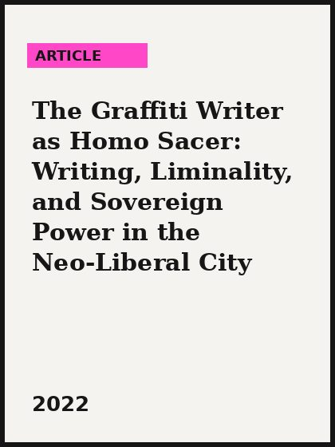
Baldini, Andrea (2022). “The Graffiti Writer as Homo Sacer: Writing, Liminality, and Sovereign Power in the Neo-Liberal City.” Street Art & Urban Creativity 8(2), pp. 8–16.
No copy hosted here. For a reading copy, please contact me. Request a copy
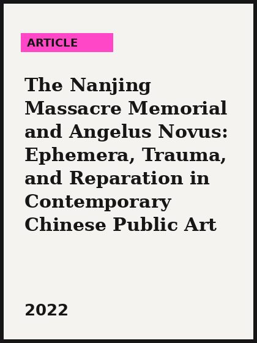
Baldini, Andrea (2022). “The Nanjing Massacre Memorial and Angelus Novus: Ephemera, Trauma, and Reparation in Contemporary Chinese Public Art.” Aisthesis 15(1), pp. 55–67.
No copy hosted here. For a reading copy, please contact me. Request a copy
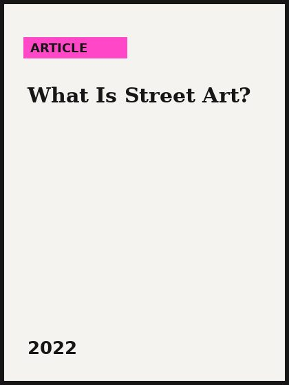
Baldini, Andrea (2022). “What Is Street Art?” Estetika: The European Journal of Aesthetics 59(1), pp. 1–21.
No copy hosted here. For a reading copy, please contact me. Request a copy
2021
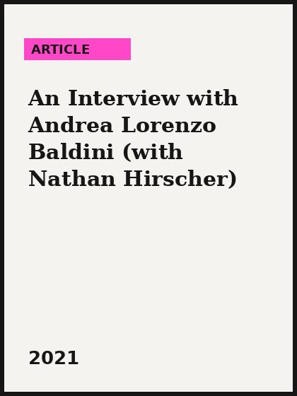
Baldini, Andrea (2021). “An Interview with Andrea Lorenzo Baldini (with Nathan Hirscher).” Washington University Review of Philosophy 1, pp. 41–52.
No copy hosted here. For a reading copy, please contact me. Request a copy
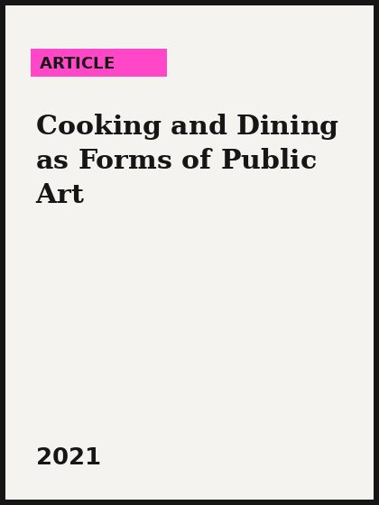
Baldini, Andrea and Andrea Borghini (2021). “Cooking and Dining as Forms of Public Art.” Food, Culture & Society: An International Journal of Multidisciplinary Research 25(2), pp. 310–327.
No copy hosted here. For a reading copy, please contact me. Request a copy
2020
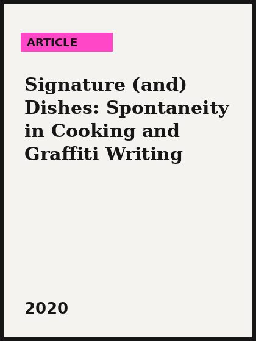
Baldini, Andrea (2020). “Signature (and) Dishes: Spontaneity in Cooking and Graffiti Writing.” Humana Mente – Journal of Philosophical Studies: Special Issue on Recipes Between Arts and Algorithms 13(38), pp. 83–110.
No copy hosted here. For a reading copy, please contact me. Request a copy
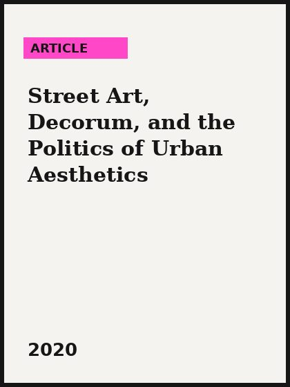
Baldini, Andrea (2020). “Street Art, Decorum, and the Politics of Urban Aesthetics.” Contemporary Aesthetics: Special Volume on Urban Aesthetics. URL: contempaesthetics.org/2020/07/16/street-art-d….
No copy hosted here. For a reading copy, please contact me. Request a copy
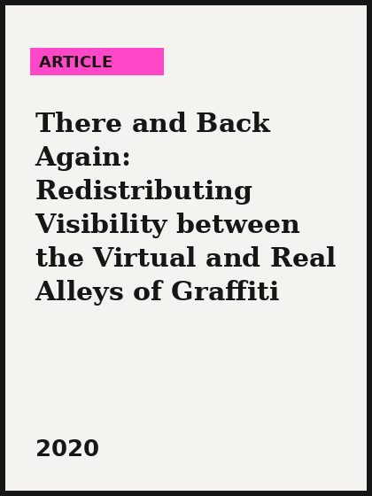
Baldini, Andrea (2020). “There and Back Again: Redistributing Visibility between the Virtual and Real Alleys of Graffiti.” Street Art & Urban Creativity 5(1), pp. 74–77.
No copy hosted here. For a reading copy, please contact me. Request a copy
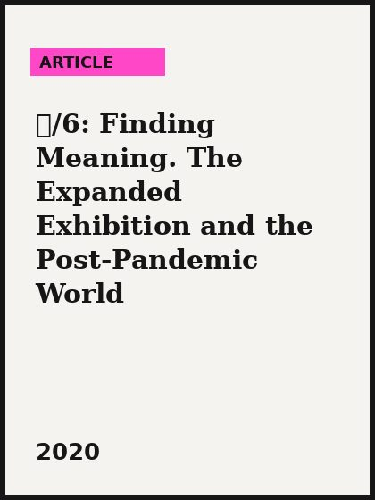
Baldini, Andrea (2020). “六/6: Finding Meaning. The Expanded Exhibition and the Post-Pandemic World.” The Journal of Public Space 5(4), pp. 301–312.
No copy hosted here. For a reading copy, please contact me. Request a copy
Baldini, Andrea and Enrico Bonadio (2020). “COVID-19, Patents and the Never-Ending Tension between Proprietary Rights and the Protection of Public Health.” European Journal of Risk Regulation 11, pp. 390–395. doi:10.1017/err.2020.24.
No copy hosted here. For a reading copy, please contact me. Request a copy
Baldini, Andrea (2020). “On the Ethical Foundation of Proprietary Rights: COVID-19, Public Health, and the Limits of Patents in the European Context.” EU Law Live 38 (Nov), pp. 2–7.
No copy hosted here. For a reading copy, please contact me. Request a copy
2019
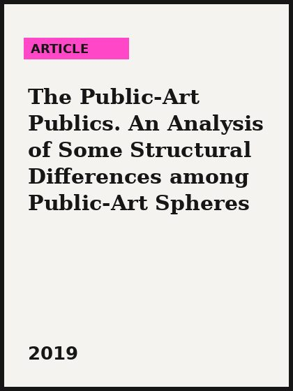
Baldini, Andrea (2019). “The Public-Art Publics. An Analysis of Some Structural Differences among Public-Art Spheres.” Open Philosophy 2, pp. 10–21.
No copy hosted here. For a reading copy, please contact me. Request a copy
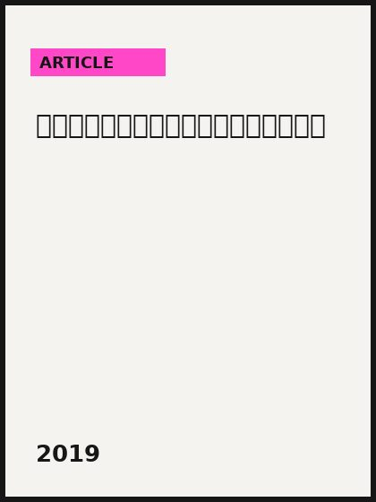
Baldini, Andrea (2019). “墙壁与绘画：当代街头艺术中的跨媒介性.” Journal of Art Theory / Art History 4, pp. 23–31.
No copy hosted here. For a reading copy, please contact me. Request a copy
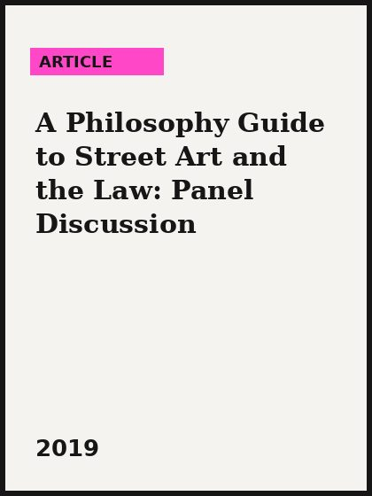
Baldini, Andrea, Enrico Bonadio, et al. (2019). “A Philosophy Guide to Street Art and the Law: Panel Discussion.” NUART Journal 3, pp. 109–113.
No copy hosted here. For a reading copy, please contact me. Request a copy
2018
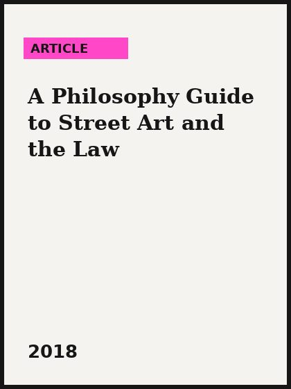
Baldini, Andrea (2018). “A Philosophy Guide to Street Art and the Law.” Brill Research Perspectives in Art and Law 2(3), pp. 1–100.
No copy hosted here. For a reading copy, please contact me. Request a copy
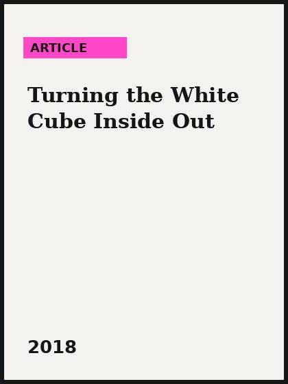
Baldini, Andrea and Pietro Rivasi (2018). “Turning the White Cube Inside Out.” NUART Journal 1, pp. 104–108.
No copy hosted here. For a reading copy, please contact me. Request a copy
2017
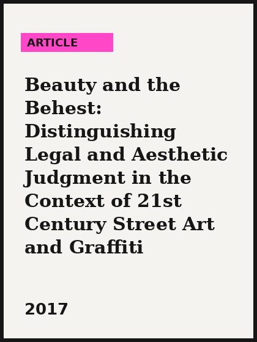
Baldini, Andrea (2017). “Beauty and the Behest: Distinguishing Legal and Aesthetic Judgment in the Context of 21st Century Street Art and Graffiti.” La Rivista di Estetica 65, pp. 91–106.
No copy hosted here. For a reading copy, please contact me. Request a copy
2016
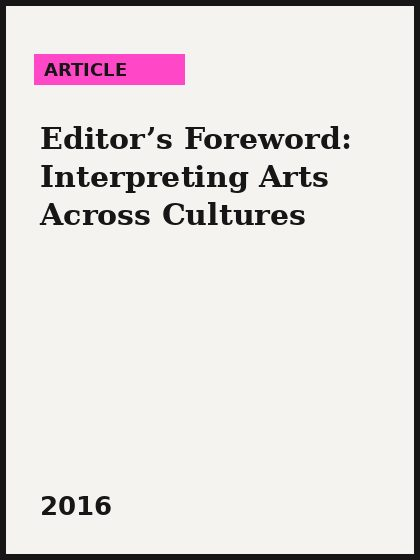
Baldini, Andrea (2016). “Editor’s Foreword: Interpreting Arts Across Cultures.” Theoretical Studies in Literature and Art (文艺理论研究) 36.1, pp. 6–7.
No copy hosted here. For a reading copy, please contact me. Request a copy
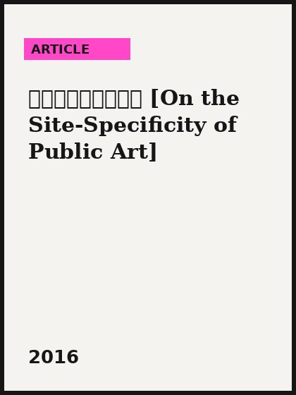
Baldini, Andrea (2016). “论公共艺术的在地性 [On the Site-Specificity of Public Art].” Theoretical Studies in Literature and Art (文艺理论研究) 36(2), pp. 78–83.
No copy hosted here. For a reading copy, please contact me. Request a copy
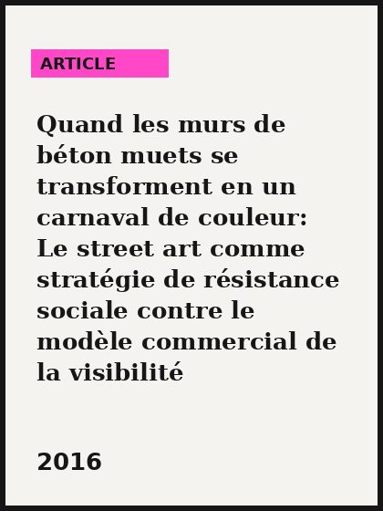
Baldini, Andrea (2016). “Quand les murs de béton muets se transforment en un carnaval de couleur: Le street art comme stratégie de résistance sociale contre le modèle commercial de la visibilité.” Cahiers de Narratologie 30.
No copy hosted here. For a reading copy, please contact me. Request a copy
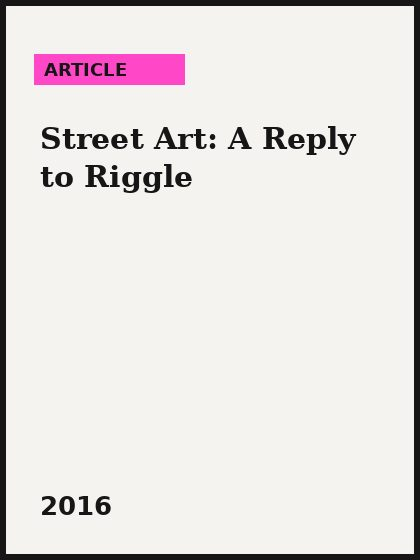
Baldini, Andrea (2016). “Street Art: A Reply to Riggle.” The Journal of Aesthetics and Art Criticism 74(2), pp. 187–191.
No copy hosted here. For a reading copy, please contact me. Request a copy
Baldini, Andrea (2016). “Wild Vegetables, Salsa, and Street Art. Cultural and Ecological Developments in the Chinese Provincial Landscape.” Lo Squaderno 41, pp. 43–46.
No copy hosted here. For a reading copy, please contact me. Request a copy
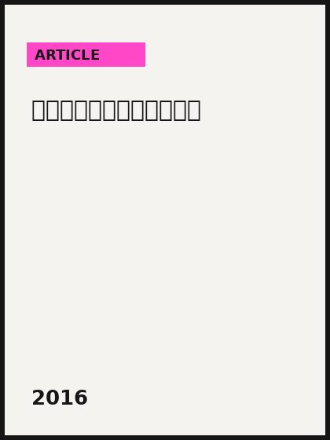
Baldini, Andrea (2016). “公共艺术品的特质及其诠释.” 文艺研究 7, pp. 25–33.
No copy hosted here. For a reading copy, please contact me. Request a copy
2015
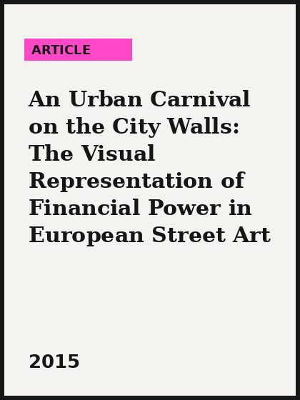
Baldini, Andrea (2015). “An Urban Carnival on the City Walls: The Visual Representation of Financial Power in European Street Art.” Journal of Visual Culture 14(2), pp. 246–252.
No copy hosted here. For a reading copy, please contact me. Request a copy
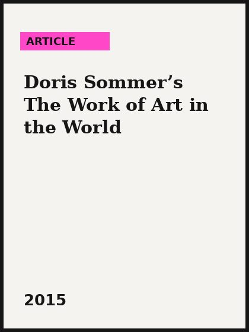
Baldini, Andrea (2015). “Doris Sommer’s The Work of Art in the World.” The Journal of Aesthetics and Art Criticism 73(2), pp. 218–220.
No copy hosted here. For a reading copy, please contact me. Request a copy
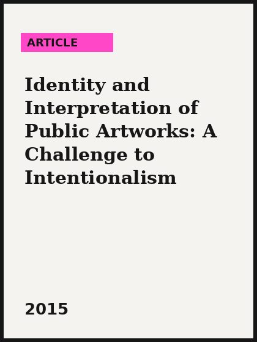
Baldini, Andrea (2015). “Identity and Interpretation of Public Artworks: A Challenge to Intentionalism.” Kultura-Społeczeństwo-Edukacja 8(2), pp. 9–26.
No copy hosted here. For a reading copy, please contact me. Request a copy
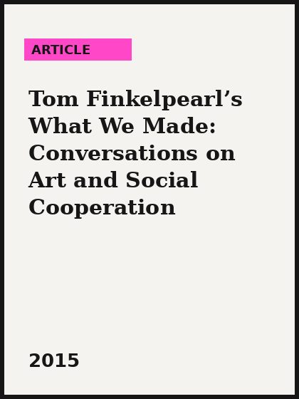
Baldini, Andrea (2015). “Tom Finkelpearl’s What We Made: Conversations on Art and Social Cooperation.” Journal of Aesthetic Education 49(4), pp. 120–124.
No copy hosted here. For a reading copy, please contact me. Request a copy
2014
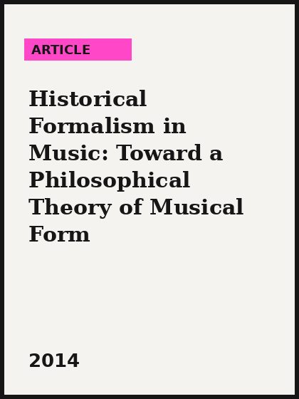
Baldini, Andrea (2014). “Historical Formalism in Music: Toward a Philosophical Theory of Musical Form.” Contemporary Aesthetics 12.
No copy hosted here. For a reading copy, please contact me. Request a copy
2013
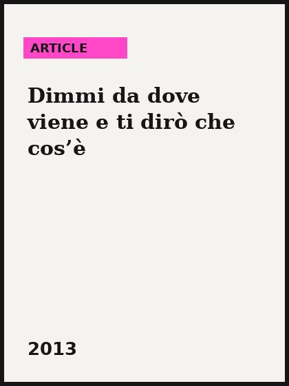
Baldini, Andrea and Andrea Borghini (2013). “Dimmi da dove viene e ti dirò che cos’è.” Allegoria 68(2), pp. 169–184.
No copy hosted here. For a reading copy, please contact me. Request a copy
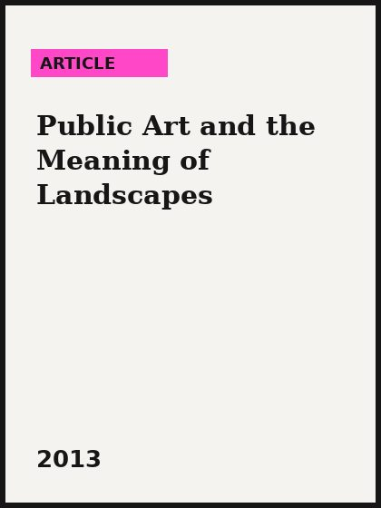
Baldini, Andrea (2013). “Public Art and the Meaning of Landscapes.” In Yearbook of the IAA 17, pp. 299–309.
No copy hosted here. For a reading copy, please contact me. Request a copy
2011
Baldini, Andrea and Andrea Borghini (2011). “On the Logic of Soccer Patronage.” Soccer & Society 12, pp. 569–585.
No copy hosted here. For a reading copy, please contact me. Request a copy
2008
Baldini, Andrea (2008). “Bach e l’ispettore SIAE.” Rescogitans.
No copy hosted here. For a reading copy, please contact me. Request a copy
Chapters
Forthcoming
Baldini, Andrea, and Matteo Ravasio (forthcoming). “Authenticity in Food.” In: Routledge Handbook of Food and Philosophy. Ed. by Andrea Borghini. New York: Routledge.
Version notice: [to be verified against the publisher’s policy]
Baldini, Andrea (forthcoming). “Graffiti as a Transgenerational Practice: Aesthetics and the Right to the City of Future Generations.” In: Aesthetics for the Future. Ed. by Tiziana Andina and Adam Andrzejewski.
Version notice: [to be verified against the publisher’s policy]
Baldini, Andrea (forthcoming). “Street Art, Democracy, and the ‘Community that Speaks’: Self-Expression in Public and the Foundation of Politics.” In: Street Art and Democracy [tentative title]. Ed. by Enrico Bonadio and Siri-Elen Hegeland. New York: Routledge.
Version notice: [to be verified against the publisher’s policy]
2026
Baldini, Andrea (2026). “Parkour, City Surfaces, and a Rancièrean Aesthetics of Sport: Redrawing the Sensible with a Leap.” In: Saggi di estetica dello sport. Ed. by Andrea Baldini, Maristella Trombetta, and Emanuele Isidori. Bari: Cacucci Editore, pp. 85–94. ISBN: 9791259656728.
No copy hosted here. For a reading copy, please contact me. Request a copy
2025
Baldini, Andrea (2025). “Street Art, musei e conflitto istituzionale: Un approccio filosofico.” In: Saggi Critici di Diritto della Street Art. Ed. by Giovanni Maria Riccio. Florence: Edifir, pp. 11–24. ISBN: 978-88-9280-259-9.
No copy hosted here. For a reading copy, please contact me. Request a copy
Baldini, Andrea, Michael Cavayero, and Matteo Ravasio (2025). “国际学者跨学科教学的实践探索与反思 [Practical Exploration and Reflections on Interdisciplinary Teaching by International Scholars].” In: 漫步在心灵的原野：北京大学艺术学院美育文集 [Strolling Through the Wilderness of the Soul: A Collection of Essays on Aesthetic Education from Peking University’s School of Arts]. Ed. by Wang Bei. Beijing: China International Broadcasting Press, pp. 415–434. ISBN: 978-7-5078-5850-1.
No copy hosted here. For a reading copy, please contact me. Request a copy
2024
Baldini, Andrea (2024). “六/6: Finding Meaning: Expanded Exhibition and Digital Art-World.” In: Enhancing Artistic Experience in Hybrid Environments. Ed. by Bogna J. Gladden-Obidzińska and Adrián Kvokačka. Poland: Polskie Towarzystwo Estetyczne, p. 8. ISBN: 978-83-971881-0-5.
No copy hosted here. For a reading copy, please contact me. Request a copy
2023
Baldini, Andrea (2023). “Andata senza ritorno: Spartenze, libertà e trasformazioni identitarie.” In: SPARTENZE: Paesaggi di con ne. Ed. by Giuseppe Sommario. Rossano: Ferrari, pp. 21–30. ISBN: 9791280242364.
No copy hosted here. For a reading copy, please contact me. Request a copy
Baldini, Andrea (2023). “街头艺术与法律的哲学指南.” In: The Essential Reader of Italian Aesthetics. Ed. by Xian Zhou and Tiziana Andina. Chinese translations of an excerpt of A Philosophy Guide to Street Art and the Law. Nanjing: Nanjing University Press, pp. 60–71. ISBN: 978-7-305-26464-1.
No copy hosted here. For a reading copy, please contact me. Request a copy
2022
Baldini, Andrea (2022). “Street Art and the Politics of Improvisation.” In: Routledge Handbook of Philosophy and Improvisation in the Arts. Ed. by Alessandro Bertinetto and Marcello Ruta. Abingdon, UK: Routledge, pp. 285–299. ISBN: 9780367203641.
No copy hosted here. For a reading copy, please contact me. Request a copy
Baldini, Andrea (2022). “Street Art, Graffiti, and Tags: The Value of Imperfection in Urban Aesthetics.” In: Imperfectionist Aesthetics in Art and Everyday Life. Ed. by Peter Cheyne. Abingdon, UK: Routledge, pp. 327–342. ISBN: 9781032170091.
No copy hosted here. For a reading copy, please contact me. Request a copy
2021
Baldini, Andrea (2021). “On the Ethical Foundation of Proprietary Rights: COVID-19, Public Health, and the Limits of Patents in the European Context.” In: EU Law in Times of Pandemic: The EU’s Legal Response to Covid-19. Ed. by Dolores Utrilla and Anjum Shabbier. Madrid: EU Law Live Press, pp. 233–240. ISBN: 978-84-123589-0-2.
No copy hosted here. For a reading copy, please contact me. Request a copy
Baldini, Andrea (2021). “Silenzio e forma musicale.” In: Assonanze e dissonanze: Storie di filosofia, musica, scienza per Ferdinando Abbri. Ed. by Stefano Brogi, Antonello La Vergata, and Marco Segala. Pisa: ETS, pp. 127–130. ISBN: 9788846761279.
No copy hosted here. For a reading copy, please contact me. Request a copy
2020
Baldini, Andrea (2020). “It Spreads Like a Virus, Works Like a Virus, But Ain’t No Disease: Graffiti Diaspora at the Time of Pandemics.” In: No Apologies 2. Rome: WholeTrain Press, pp. 3–7.
No copy hosted here. For a reading copy, please contact me. Request a copy
2019
Baldini, Andrea (2019). “Copyright Skepticism and Street Art: A Contrasting Opinion.” In: The Cambridge Handbook of Copyright in Street Art and Graffiti. Ed. by Enrico Bonadio. Cambridge: Cambridge University Press, pp. 315–331. ISBN: 9781108482332.
No copy hosted here. For a reading copy, please contact me. Request a copy
2018
Baldini, Andrea and Pamela Pietrucci (2018). “Yarnbombing Interventions: Let’s Patch It!” In: Interventions: Communication Research and Practice. Ed. by Adrienne Shaw and D. Travers Scott. New York: Peter Lang, pp. 257–264. ISBN: 978-1-4331-4815-6.
No copy hosted here. For a reading copy, please contact me. Request a copy
2017
Baldini, Andrea (2017). “Dangerous Liaisons: Graffiti in da Museum.” In: Un(Authorized)//Commissioned. Ed. by Pietro Rivasi and Andrea Baldini. Rome: WholeTrain Press. ISBN: 9788897640059.
No copy hosted here. For a reading copy, please contact me. Request a copy
Baldini, Andrea and Pamela Pietrucci (2017). “Knitting a Community Back Together: Spontaneous Public Art as Citizenship Engagement in Post- Earthquake L’Aquila.” In: Performative Citizenship: Public Art, Urban Design, and Political Participation. Ed. by Laura Iannelli and Pierluigi Musarò.
No copy hosted here. For a reading copy, please contact me. Request a copy
2016
Baldini, Andrea (2016). “Muri Addomesticati? Street art, musei e rebellione.” In: Street Art. Banksy & Co. Ed. by Christian Omodeo. Bologna: Bononia University Press, pp. 107–114. ISBN: 88-6923-131-3.
No copy hosted here. For a reading copy, please contact me. Request a copy
2011
Baldini, Andrea (2011). “Introduzione.” In: Ma allora, che cos’é un’opera d’arte? Ed. by Joseph Margolis. Milano: Mimesis, pp. 7–16. ISBN: 9788857502595.
No copy hosted here. For a reading copy, please contact me. Request a copy
2010
Baldini, Andrea and Andrea Borghini (2010). “When a Soccer Club Becomes a Mirror.” In: Soccer & Philosophy: Beautiful Thoughts on the Beautiful Game. Ed. by Ted Richards. Chicago: Open Court Edition, pp. 302–316. ISBN: 978-0812696769.
No copy hosted here. For a reading copy, please contact me. Request a copy
Edited volumes and special issues
Baldini, Andrea, ed. (forthcoming) 六/6: Finding Meaning. Pistoia, Italy: Metilene Edizioni.
Version notice: [to be verified against the publisher’s policy]
Baldini, Andrea, and Francesco Angelini, eds. (forthcoming). “Art and Design in the Age of AI.” In: Humanities and Social Sciences Communication.
Version notice: [to be verified against the publisher’s policy]
Baldini, Andrea, ed. (forthcoming). “Art and Infinity.” In: Artology: Studies in the Arts.
Version notice: [to be verified against the publisher’s policy]
Baldini, Andrea, ed. (forthcoming). “Zhang Dali: Contemporary Art with Chinese Characteristics.” In: La Rivista di Estetica.
Version notice: [to be verified against the publisher’s policy]
Baldini, Andrea, Maristella Trombetta, and Emanuele Isidori, eds. (2026). Saggi di estetica dello sport. Bari: Cacucci Editore. ISBN: 9791259656728.
Version notice: [to be verified against the publisher’s policy]
Back cover
Lo sport è spesso raccontato attraverso il linguaggio della prestazione, del record e della competizione. Eppure, sotto la superficie del risultato, si dispiega una dimensione più profonda: quella della forma, dell’esperienza e del significato. In ogni gesto atletico si intrecciano corpo e immaginazione, disciplina e libertà, limite e trascendimento. Lo sport appare così come uno dei luoghi privilegiati nei quali l’essere umano dà forma a se stesso, trasformando il movimento in linguaggio e l’azione in racconto condiviso. I contributi raccolti in questo volume esplorano l’estetica dello sport come campo di ricerca capace di mettere in dialogo filosofia, arte, pedagogia e cultura contemporanea. Dalla bellezza dell’imperfezione alle esperienze del sublime, dalla vulnerabilità dei corpi alle pratiche che riscrivono gli spazi urbani, emerge una visione dello sport come laboratorio di sensibilità, produzione di immaginari e costruzione di valori. Lontano da ogni riduzione spettacolare o meramente tecnica, questi saggi mostrano come il gesto sportivo possa essere compreso quale evento estetico e antropologico, capace di rivelare la complessità dell’umano. Perché osservare uno sport significa, in fondo, interrogare una delle domande più antiche della filosofia: come prende forma, nel mondo, l’esperienza del senso?
Baldini, Andrea, Xianglan Chen, Lifei Wang, and Zhonggen Yu, eds. (2025). Proceedings of the 2025 3rd International Conference on Language, Innovative Education and Cultural Communication. Dordrecht, Netherlands: Atlantis Press (Springer Nature).
Version notice: [to be verified against the publisher’s policy]
Baldini, Andrea, ed. (2024). “The Definition of Art and the Legacy of Joseph Margolis Vol. 2.” In: EAJP.
Version notice: [to be verified against the publisher’s policy]
Baldini, Andrea, ed. (2023). “The Definition of Art and the Legacy of Joseph Margolis Vol. 1.” In: EAJP.
Version notice: [to be verified against the publisher’s policy]
Baldini, Andrea, ed. (2023). “The Role of Aesthetics in Culinary Heritage.” In: The Journal of Aesthetics and Art Criticism.
Version notice: [to be verified against the publisher’s policy]
Baldini, Andrea, ed. (2016). “Do We All See the Same Artwork?” In: Theoretical Studies in Literature and Art.
Version notice: [to be verified against the publisher’s policy]
Margolis, Joseph, ed. (2011). Ma Allora, Che Cos’è un’Opera d’Arte? Trans. by Andrea Baldini. Milano: Mimesis. ISBN: 9788857502595.
Version notice: [to be verified against the publisher’s policy]
Under review
“Who Decides What Stays on the Wall? Street-Level Bureaucracy and the Management of Spontaneous Public Art,” The Journal of Arts Management, Law, and Society. R&R (minor revisions).
Version notice: [to be verified against the publisher’s policy]
“Stealing Leonardo: Copyright Skepticism and the Public Domain in Cultural Dialogue with China,” Artology, special issue “Leonardo da Vinci in the Global Imaginary: Entanglements with China.” R&R.
Version notice: [to be verified against the publisher’s policy]
“The Calendar and the Wrecking Ball: Law as Medium in Zhang Dali’s Dialogue and Demolition,” Rivista di Estetica.
Version notice: [to be verified against the publisher’s policy]